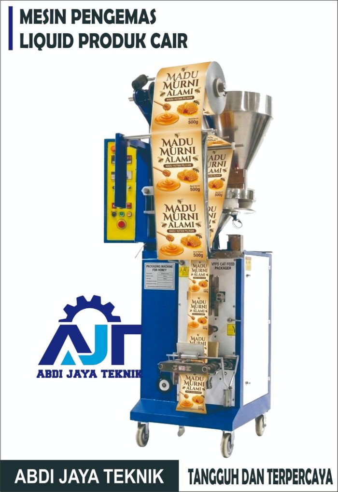

Mesin Pengemas Tepung

Cocok untuk tepung, bubuk bumbu, dan produk powder lain yang membutuhkan akurasi isi dan efisiensi produksi.
- Kecepatan: 20-45 kemasan/menit
- Kapasitas: hingga 500 gram
- Daya: 1.300 watt

Cocok untuk tepung, bubuk bumbu, dan produk powder lain yang membutuhkan akurasi isi dan efisiensi produksi.